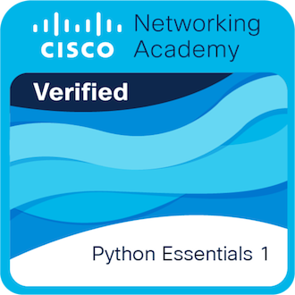

PROGRAMACIÓN · PYTHON
Python Essentials 1
Cisco Networking Academy
FORMACIÓN CONTINUA · EVIDENCIA DOCUMENTAL
Una selección de constancias y certificados de mi formación en ingeniería, tecnología, seguridad y gestión. Recorre la colección con las flechas o desliza sobre ella.
APRENDIZAJE ACREDITADO
Reconocimientos visuales de competencias adquiridas mediante formación y evaluación.

Cisco Networking Academy
MI TRAYECTORIA DE APRENDIZAJE
Cada documento se puede ampliar para leerlo. Los datos personales de identificación se han ocultado en las vistas públicas.
Usa las flechas, desliza horizontalmente o selecciona un certificado para ampliarlo.
HABLEMOS